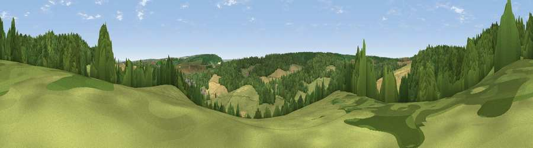

Viewpoint near Cuxton
#40181 in England · top 61% of its area beats it · near CuxtonWhere it is
The exact computed spot (TQ 69575 67725). Click the marker for map links.
The view, rendered

A 360° render of this exact spot computed from the terrain model, tree cover and land cover — summer colours, afternoon light, calibrated against photographs of famous viewpoints. Real trees, hedges and buildings will differ in detail.
The panorama
Grey silhouette: terrain skyline in each direction (720 bearings, Earth curvature and refraction included). Dashed green: skyline with trees (+15 m) and buildings (+8 m) as obstacles. Blue strip: how far the ground is visible on each bearing.
Where the view opens
Wedge length = distance to the farthest visible ground on that bearing (vegetation-aware). Rings at 10, 25 and 50 km.
What fills the view
55% woodland · 29% grassland · 14% cropland · 2% built-up
Angular shares of the visible panorama (visual magnitude), not map area. Landscape diversity 0.46 (0–1 Shannon).
Key numbers
More beautiful places nearby
The staircase of upgrades: each row has a higher view potential than everything closer. Driving times are estimates from straight-line distance, calibrated against real road routing — check an actual route before setting out.
| Place | Direction | Drive | Score |
|---|---|---|---|
| Viewpoint near Cuxton | SSE · 2 km | ~5 min | 40.7 |
| Viewpoint near Shorne | N · 4 km | ~8 min | 52.8 |
| Viewpoint near Birling | SSW · 6 km | ~13 min | 65.1 |
| Viewpoint near Shipbourne | SW · 19 km | ~33 min | 66.2 |
| Viewpoint near Charing | SE · 30 km | ~47 min | 68.6 |
| Viewpoint near Westwell | SE · 35 km | ~53 min | 72.2 |
| Viewpoint near Lympne | SE · 52 km | ~73 min | 72.6 |
| Tolsford Hill | SE · 55 km | ~76 min | 77.9 |
51.38324, 0.43548 · source: screening · position refined by local search. Computed location — check access rights before visiting.